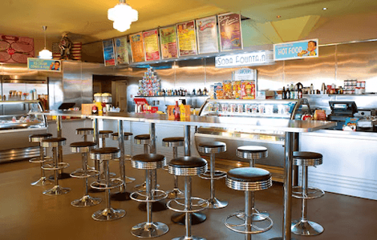

NATIONAL GEOGRAPHIC
7 of the best American diners in the UK
TRAVEL
- 
Found in just about every big city and small town in the US, the diner is a beloved institution and a veritable cultural icon. Dishing up quick, affordable American classics, these colourful restaurants have fed hungry customers from all walks of life since the early 1900s, and their nostalgic appeal continues to stand the test of time. Back in the UK, check out our top seven diner-style venues across the country.
1. Billy Bob’s Parlour, Skipton
This cheery diner might be located deep in the heart of the Yorkshire Dales, but it’s immensely popular, particularly with families. It’s both child- and dog-friendly, and there’s an enormous play area out front. Once you’ve finished snapping photos of the kitsch interiors, sink your teeth into a mushroom Swiss burger or enjoy a refreshing glass of sarsaparilla from the restored 1940s soda fountain.
2. Camden Diner, London
This venue’s neon-lit frontage looks like something you’d spot while on a Vegas highway not a busy street in Camden. Inside the recently revamped space, discover the hallmarks of a quintessential American diner: think glossy leatherette booths, colourful posters and a menu featuring plenty of burgers and hot dogs. Save space for the indulgent Snickers milkshake: chock-full of chocolate, toffee sauce, Nutella, peanut butter and ice cream.
3. The City Cafe, Edinburgh
By day, this buzzy spot just off the Royal Mile fashions itself as an old-school US diner, complete with vintage posters, neon signs, jukeboxes and a life-size statue of Elvis. It’s especially popular for its hearty all-day breakfast offerings, including vanilla pancakes and eggs florentine. Come nightfall, it’s a lively bar with DJ sets on Fridays and Saturdays.
4. Bobby Jo’s Diner, Southend-on-Sea
Overlooking the Southend seafront, this atmospheric 1950s-style diner serves up nostalgic charm in spades. Settle into one of the turquoise booths and get ordering: the menu runs the gamut from American classics like sloppy burgers and chilli cheese dogs to the decidedly British scampi and chips. There’s also a tempting array of thick shakes to slurp on, with flavours like bubblegum and banoffee.
5. Electric Diner, London
With its exposed brick walls, grungy lighting and dark wood counter, this Notting Hill hangout offers a stylish take on the classic diner. The menu is also a touch more sophisticated expect to see classics like milkshakes and cheeseburgers, but also steak tartare with sourdough and blackened sea bass with cucumber, fennel and lime. Pair your meal with the Almost Naked & Famous a heady cocktail of pisco, Aperol, green chartreuse, passionfruit and lime.
6. JB’s American Diner, Brighton
This laid-back diner along the Brighton seafront nails the Americana aesthetic perfectly, from the Route 66 signs and life-size Elvis statue seemingly a recurring theme right down to the Formica tables and chrome bar stools. The food offerings are also suitably nostalgic, with dishes such as barbecued pork ribs, banana splits and Chicago-style hot dogs on the menu all served against a backdrop of classic rock n’ roll tunes.
7. OK Diner, Carlton, Nottinghamshire
True to the spirit of the American roadside diner, this 1950s-inspired joint is located just off the A1 Northbound, making it the perfect stopover for hungry travellers. Here, you can refuel with a hearty bacon cheeseburger or a thick slab of French toast not to mention unlimited coffee while admiring the 1950s memorabilia adorning the walls. There are eight other OK Diner restaurants across the UK, including in Derby, Tickencote and Leominster.
Comments :
- john Very good
- john Very good
Leave a Reply
Your email address will not be published. Required fields are marked*
Related posts:
-
 Discover China's History Along the Great Wall
Discover China's History Along the Great Wall"The Great Wall impresses everyone who sees it for the first time, from children to adults, from the general tourists to scholars,” says Henry Ng, the manager of the World Monuments Fund’s China projects
View article -
 Unearth the Treasures of Marrakech
Unearth the Treasures of MarrakechFew kids can resist a scavenger hunt. So to explore the suq (the Arab word for a bazaar) in Marrakech, actor and writer Andrew McCarthy turned the experience into a game for his nine-year-old son
View article -
 Uncover the Secret Side of Rio de Janeiro
Uncover the Secret Side of Rio de JaneiroSince the release of the animated movie Rio (2011), parents and kids might be forgiven for thinking the city on the coast of Brazil is populated by frolicking blue macaws, red-crested cardinals
View article